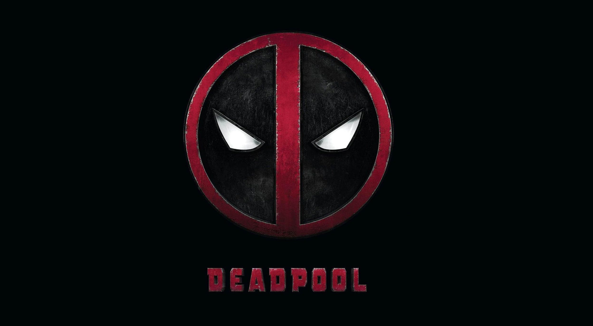

These are the trailers for 2 DeadPool movies. Enjoy!
Wade Wilson (Ryan Reynolds) is a former Special Forces operative who now works as a mercenary. His world comes crashing down when evil scientist Ajax (Ed Skrein) tortures, disfigures and transforms him into Deadpool. The rogue experiment leaves Deadpool with accelerated healing powers and a twisted sense of humor. With help from mutant allies Colossus and Negasonic Teenage Warhead (Brianna Hildebrand), Deadpool uses his new skills to hunt down the man who nearly destroyed his life. In the second movie,Wisecracking mercenary Deadpool meets Russell, an angry teenage mutant who lives at an orphanage. When Russell becomes the target of Cable -- a genetically enhanced soldier from the future -- Deadpool realizes that he'll need some help saving the boy from such a superior enemy. He soon joins forces with Bedlam, Shatterstar, Domino and other powerful mutants to protect young Russell from Cable and his advanced weaponry.
